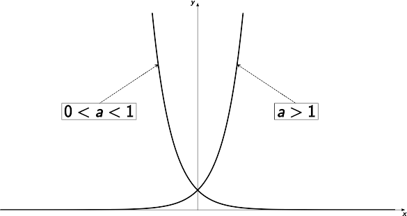
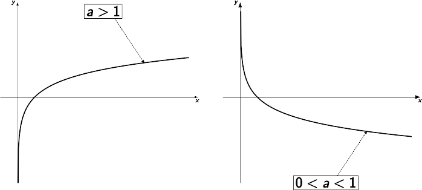

Séance d’exercices du 22/10/25
Soit \(f\) et \(g\) deux fonctions. Les opérations sur ces fonctions sont définie à travers leurs expressions analytiques:
\((f\pm g)\) est la fonction définie par
\[ (f\pm g)(x)=f(x)\pm g(x). \]
De plus, \(\text{dom}{\left(f\pm g\right)}=\text{dom}{\left(f\right)}\cap \text{dom}{\left(g\right)}\).
\((f\cdot g)\) est la fonction définie par
\[ (f\cdot g)(x)=f(x)\cdot g(x). \]
De plus, \(\text{dom}{\left(f\cdot g\right)}=\text{dom}{\left(f\right)}\cap \text{dom}{\left(g\right)}\).
\(\dfrac{f}{g}\) est la fonction définie par
\[ \left(\dfrac{f}{g}\right)(x)=\dfrac{f(x)}{g(x)}. \]
De plus, \(\text{dom}{\left(\dfrac{f}{g}\right)}=\text{dom}{\left(f\right)}\cap \text{dom}{\left(g\right)}\backslash\{x\in\text{dom}{\left(g\right)}|g(x)=0\}\).
\(f\circ g\) est la fonction définie par
\[ (f\circ g)(x)=f(g(x)) \]
De plus, \(\text{dom}{\left(f\cdot g\right)}=\{x\in\text{dom}{\left(g\right)}|g(x)\in\text{dom}{\left(f\right)}\}\)
Attention!: la composée n’est pas une opération commutative: \(f\circ g\neq g\circ g\).
Soient \(f\) et \(g\) deux fonctions. Déterminer une expression analytique de \(f\circ g\) et \(g\circ f\).
Soient \(f\) et \(g\) deux fonctions. Déterminer une expression analytique de \(f\circ g\) et \(g\circ f\).
Soient \(f\) et \(g\) deux fonctions. Déterminer une expression analytique de \(f\circ g\) et \(g\circ f\).
Soient \(f\) et \(g\) deux fonctions. Déterminer une expression analytique de \(f\circ g\) et \(g\circ f\).
Prépa:
\(f(x)=\text{e}^x\) et \(g(x)=42\ln(x)\)
\(f(x)=\sin(2x)\) et \(g(x)=4-7x\)
\(f(x)=\sin(x)\) et \(g(x)=|1-x|\)
Définition: Soit \(f\) une fonction. La réciproque de \(f\) est une fonction (si elle existe) \(g\) telle que \(f\circ g=g\circ f=\text{Id}\).
Graphiquement, la réciproque de \(f\) est s’obtient par symétrique d’axe \(x=y\).
Exemple: \(x^3\) a pour réciproque \(\sqrt[3]{x}\).
Exemple: \(x^2\) n’a pas de réciproque. Mais restreinte à \(\mathbb{R}^{\ge 0}\), alors \(x^2\) a une réciproque, la fonction \(\sqrt{x}\).
\(f(x)=2x+3\)
Soit \(a\in\mathbb{R}^{>0}\backslash\{1\}\) une base. L’exponentielle de base \(a\), notée \(a^x\), est une fonction dérivable qui prolonge les exposants de base \(a\).
Soit \(a\in\mathbb{R}^{>0}\backslash\{1\}\) une base. Les propriétés algébriques de \(a^x\) sont: pour \(m,n\in\mathbb{R}\)
La deuxième propriété dit: l’exponentielle transforme une somme ne un produit. En conséquence, une exponentielle croît ou décroît très vite.
Soit \(a\in\mathbb{R}^{>0}\backslash\{1\}\) une base. Le logarithme de base \(a\), noté \(\log_a(x)\), est la réciproque de \(a^x\).
Soit \(a\in\mathbb{R}^{>0}\backslash\{1\}\) une base. Les propriétés algébriques de \(\log_a(x)\) sont obtenue par traduction de celles de \(a^x\): pour \(m,n\in\mathbb{R}\)
Une base est particulière: la base \(\text{e}\simeq 2,718281828459045\). Pour cette base on note l’exponentielle \(\text{e}^x\) et le logarithme \(\ln(x)\).
Soient \(a\), \(b\) et \(c\) trois réels strictement positifs et différents de \(1\). Prouvez que \({\log_a(b) \times \log_b(c) \times \log_c (a) = 1}\).
Exprimez les logarithmes suivants en fonction de multiples de \(\ln (2)\), \(\ln (3)\) ou \(\ln (5)\) :
Exprimez les logarithmes suivants en fonction de multiples de \(\ln (2)\), \(\ln (3)\) ou \(\ln (5)\) :
Exprimez les logarithmes suivants en fonction de multiples de \(\ln (2)\), \(\ln (3)\) ou \(\ln (5)\) :
Exprimez les logarithmes suivants en fonction de multiples de \(\ln (2)\), \(\ln (3)\) ou \(\ln (5)\) :
Exprimez les logarithmes suivants en fonction de multiples de \(\ln (2)\), \(\ln (3)\) ou \(\ln (5)\) :
Exprimez les logarithmes suivants en fonction de multiples de \(\ln (2)\), \(\ln (3)\) ou \(\ln (5)\) :
Le reste est à faire à la maison.
En sachant que \(\log (2) \simeq 0,301\), déterminez ce que vaut approximativement :
En sachant que \(\log (2) \simeq 0,301\), déterminez ce que vaut approximativement :
En sachant que \(\log (2) \simeq 0,301\), déterminez ce que vaut approximativement :
En sachant que \(\log (2) \simeq 0,301\), déterminez ce que vaut approximativement :
Le reste est à faire à la maison.
Résolvez les équations suivantes dans \(\mathbb{R}\) :
Résolvez les équations suivantes dans \(\mathbb{R}\) :
Résolvez les équations suivantes dans \(\mathbb{R}\) :
Résolvez les équations suivantes dans \(\mathbb{R}\) :
Résolvez les équations suivantes dans \(\mathbb{R}\) :
Le reste est à faire à la maison.
Résolvez les équations suivantes dans \(\mathbb{R}\) :
Résolvez les équations suivantes dans \(\mathbb{R}\) :
Résolvez les équations suivantes dans \(\mathbb{R}\) :
Résolvez les équations suivantes dans \(\mathbb{R}\) :
Résolvez les équations suivantes dans \(\mathbb{R}\) :
Le reste est à faire à la maison.